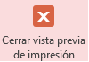

.
1. Consulta
de notas entre fechas (Consulta de parámetros que te pidan los rangos
de fechas)
- La frutería y verdulería "La Huerta" necesita conocer las notas de
venta que tiene en un periodo de tiempo, por lo que se te pide crees una
consulta donde se despliegue:
.a) ID_Nota (ordenado ascendentemente)
b) Fecha
c) Nombre del
cliente
d) Tipo de pago
.
- Guarda la consulta como
Notas entre fechas
- Checa los datos
resultados de tu consulta, dando clic en Ver > Vista Hoja de datos
- Regresa al diseño de
tu consulta, dando clic en Ver > Vista Diseño y haga uso de la
función Entre que pida el rango de fechas entre los cuales se
desean mostrar los datos. Entre
[ Mensaje1] y [ Mensaje2]
- Prueba tu consulta
introduciendo rangos de fechas como: 1/01/17 y
31/03/17.
2.
Informe de notas entre fechas (Informe de parámetros)
- Utiliza la consulta de
Notas entre fechas para generar el siguiente informe:
|
|
- Agrupa la información
por el campo Fecha. Al agrupar es importante seleccionar el botón
de opciones de agrupamiento y decirle que muestre las fechas
por mes.
- Ordena la información
en forma ascendentemente por Fecha.
- Distribución:
En pasos y Orientación: Vertical
- El título del informe
deberá ser: Notas entre fechas.
- Del menú, da clic en el botón de Cerrar vista previa de impresión,
para que muestre el informe en Vista diseño.

- En la sección de
Encabezado de página ajusta el tamaño de las etiquetas para que
se vean como se muestra en la imagen.
- Alinea el contenido de
los cuadros de texto y etiquetas de la mejor forma (izquierda /
centrado
/ derecha).
- Cambia el diseño de tu
informe. Puedes cambiar también el color y el tipo de letra
que más te agrade.
- Checa tu informe,
dando clic en Ver > Vista Informes.
- Prueba tu informe
introduciendo rangos de fechas como: 1-01-17 y
31-03-17.
|
3. Consulta de Facturas de Mayo de 2017 (Consulta de parámetros
con fechas específicas)
- Agrupa la información por el campo Fecha. Al agrupar es
importante seleccionar el botón de opciones de agrupamiento
y decirle que muestre las fechas por día.
- Ordena la información en forma ascendentemente por Fecha.
- Distribución:
En pasos y Orientación: Vertical
- El título del informe deberá ser: Facturación Mayo 2017.
- Del menú, da clic en el botón de Cerrar vista preliminar, para
que muestre el informe en Vista diseño.
- En la sección de Encabezado de página
ajusta el tamaño de las etiquetas para que se vean como se muestra en la
imagen.
- Alinea el contenido de
los cuadros de texto y etiquetas de la mejor forma (izquierda /
centrado
/ derecha).
- Cambia el diseño de tu
informe. Puedes cambiar también el color y el tipo de letra
que más te agrade.
- Checa tu informe,
dando clic en Ver > Vista Informes.
5.
Consulta de productos por precios (Consulta de parámetros que te pidan
los rangos de cantidades)
- La frutería y verdulería "La Huerta" requiere que realices una
consulta que muestre todos los productos que se encuentran entre un
determinado rango de precios, por lo que se te pide crees una consulta
donde se despliegue la siguiente información:.
.
- Ordena la información en forma ascendente por precio..
- Guarda la consulta
como Productos por precio.
- Checa los datos
resultados de tu consulta, dando clic en Ver > Vista Hoja de datos.
- Regresa al diseño de
tu consulta, dando clic en Ver > Vista Diseño.
- Haga uso de la función
Entre que pida los topes mínimo y máximo de los precios de los
productos. Entre [ Mensaje1] y [ Mensaje2].
- Prueba tu consulta
introduciendo rangos de valores, por ejemplo: entre 20
y
50.
6.
Informe de productos por precios (Informe con distribución tabular)
- Utiliza la consulta de
Productos por precio para generar el informe como se muestra en la
imagen.
- Ordena la información
en forma ascendentemente por el precio del producto.
- Distribución:
Tabular y Orientación: Vertical
- El título del informe
deberá ser: Productos por precio.
- Del menú, da clic en el botón de Cerrar vista previa de impresión,
para que muestre el informe en Vista diseño.
- En la sección de
Encabezado de página, cambia el nombre de las etiquetas y ajusta su
tamaño para que se vean como se muestra en la imagen.
- Alinea el contenido de
los cuadros de texto y etiquetas de la mejor forma (izquierda /
centrado
/ derecha).
- Cambia el diseño de tu
informe. Puedes cambiar también el color y el tipo de letra
que más te agrade.
- Checa tu informe,
dando clic en Ver > Vista Informes.
- Prueba tu informe
introduciendo rangos de valores, por ejemplo: entre 20
y 50.
|